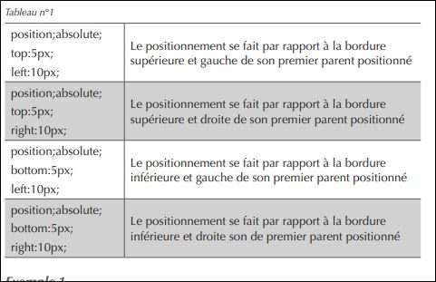
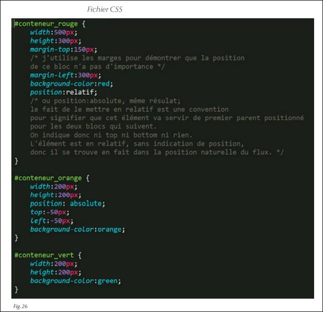
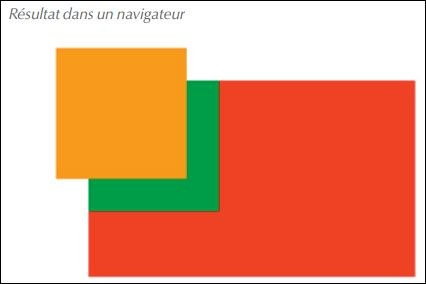

IV.Postion absolue
La position absolue d'un élément block est similaire à la position re lative à la diference que:
_ lélément sort complement du flux normole ce qui laise une plus grande marge de manoeuvre pour le posisionet dans la page;
– sa position dans le fichier HTML est moins importante que pour un élément en position relative. En effet,l’élément en position absolue se positionne par rapport à son premier parent lui-même positionné (en absolu ou relatif). - Et si aucun parent n’est positionné, c’est le système de de coordonnée globale de la page qui sert de référence. Dans ce cas, sa position dans le fichier HTML n’a plus aucune importance
_ Enfin, la particularité d’un élément en position absolue, est qu’il possède un troisième axe local (Z) dit de profondeur. C’est-à-dire que l’on peut choisir entre deux éléments en position absolue celui qui se place au-dessus de l’autre en cas de chevauchement.
_ Ce nouveau concept est peut-être encore flou pour vous mais nous allons le développer avec des exemples concrets.
sytax css
exemples:
dans mon exemple le <"body"> a etait replaser par <"div class="fixe" >.
Explication : le seul parent de conteneur_rouge est <"body"> dans mon expemle <"div class="fixe" ">.
Par défaut,<"body"> est positionné, c’est donc le repère du positionnement demandé,
conteneur_rouge se positionne par rapport à <"body"> à 5% 15% dans mon expemledu haut et à
20px dans mon expemle 2% de la droite.
Exemple 2
Cet exemple est similaire à l’exemple 3 du chapitre position relative.
Observez la différence de comportement.
 
Mais vous remarquez aussi que div.vert (flux normal) se place comme si
div.orange n’existait pas, ce qui n’était pas le cas pour la position relative.
On assiste donc à une superposition des éléments sur plusieurs couches
(ou layers).
Vous remarquerez que le résultat est identique à la première version.
En conséquence, l’emplacement d’un élément en position absolue dans le code HTML n’a aucune importance à partir du moment où son parent direct est positionné. Sa position dans la page sera fonction de la position de son parent en position relative (ou absolue).
Exemple 3 : superposition des div
Nous pouvons donc superposer des éléments de bloc et choisir l’ordre d’empilage. La règle de style qui permet cela est :
z-index:(ici un nombre supérieure ou égale à 1)
L’élément ayant un z-index de 2 recouvre celui qui possède un z-index de 1 …